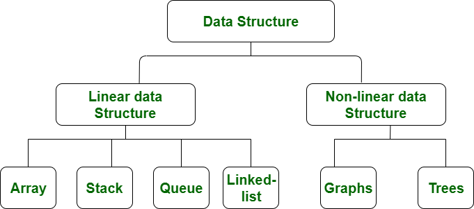

What is Data Structure ?
A data structure is a storage that is used to store and organize data. It is a way of arranging data on a computer so that it can be accessed and updated efficiently.
A data structure is not only used for organizing the data. It is also used for processing, retrieving, and storing data. There are different basic and advanced types of data structures that are used in almost every program or software system that has been developed. So we must have good knowledge about data structures.
Get Hands-on With Data Structures and Algorithms
Master fundamental computer science concepts to solve real-world problems and ace coding interview questions with Educative’s interactive course Data Structures and Algorithms in Python. Sign up at Educative.io with the code GEEKS10 to save 10% on your subscription.
Classification Of Data Structure
-
data structure:
Data structure in which data elements are arranged sequentially or linearly, where each element is attached to its previous and next adjacent elements, is called a linear data structure.
Examples of linear data structures are array, stack, queue, linked list, etc.
- Static data structure:
Static data structure has a fixed memory size. It is easier to access the elements in a static data structure.
An example of this data structure is an array.
- Dynamic data structure:
In dynamic data structure, the size is not fixed. It can be randomly updated during the runtime which may be considered efficient concerning the memory (space) complexity of the code.
Examples of this data structure are queue, stack, etc.
- Non-linear data structure:
Data structures where data elements are not placed sequentially or linearly are called non-linear data structures. In a non-linear data structure, we can’t traverse all the elements in a single run only.
Examples of non-linear data structures are trees and graphs
.

- 4 Types of Data Structures
- Linear data structures
#
- Tree data structures
- Hash tables.
- Graph data structures
What Is Linear Data Structure?
A linear data structure is known as a data structure that allows data elements to be arranged in a sequential or linear fashion. Each element is attached with its next and previous adjacent. A linear data structure only has one level and performs linear searching in the data structure. We can therefore traverse all elements in a single run. Because computer memory is linearly arranged, linear data structures are simple to implement. Linear data structure examples are array, linked list, stack, queue, etc.
Characteristics of Linear Data Structure
This is a data structure in which the data arrangement follows a linear trend. Each element in the data structure is arranged in a linear fashion so that it can be linked to the previous and next elements. The elements are stored in a linear fashion, which allows for single-level data storage. The data can be accessed in one run.
It's a data structure that stores and manages data in a linear order.
The data elements of the sequence are linked from one to the next.
Implementing the linear structure of data within a computer's RAM is simple, provided that the data are organized sequentially.
Array, queue. Stack, linked list, etc., are a few examples of such a structure.
Only one relationship exists between the data elements in the data structure.
Because the data elements are stored on a single level, it is possible to traverse the data elements in one run.
If a linear data storage structure is used, it is not well utilized.
The complexity of the structure's time increases with an increase in its size.
1. Array
An Array is a type of framework that stores homogeneous parts in connected memory locations. It is precisely the same kinds of objects that are saved sequentially inside an array. The fundamental concept behind linear arrays in the data structure is that multiple pieces of data similar can be stored together. Before saving the data in an array, it is essential that the size of an array need to be established. Every aspect of the array can be accessed or modified, and the data is stored in an index to identify their places of their own.
The concept of an array can be explained through an easy example of saving the marks for all the students in a class if you assume that there are twenty pupils. The size of your array needs to be identified as 20. The marks of all pupils could also be saved in the array created without the need to create separate variables for markings for every pupil. A simple traversal of the array will allow access to the parts.
2. Linked List
It is this type of data system where individual objects are stored sequentially. Each object within the system has a reference and information for the next object. The last node on the linked list has an identifier for null.
The first element linked to the list is known as the "mind" of the list. There are a lot of differences between linked lists and other kinds of data structures. This concerns the allocation of memory, the inside structures of the structure, and the operation carried out on this linked list.
Finding an element of a linked list is slow when compared to arrays since the indexing of an array aids in locating the element. The process in the case of a linked list must begin in mind and work through the whole structure until the component you want is found. Contrary to this, the advantage of linked lists would be that the addition or even the removal of elements at the beginning is completed very quickly.
There are basically two kinds of lists that are linked:
One-Linked Listing: This type of system contains the guide or address of the next node within the current node. This means that a node is the last one to have the address as well as a guide is a NULL. Example: A > B > C > D > E > NULL.
Double-Linked Listing: The title suggests that every node has two references that are related to it. One reference is directed to the previous node, and the second reference is directed to the following node. Traversal is possible both ways since an example guide is available from the previous nodes. In addition, the explicit access requirement isn't needed to delete. Example: NULL B C D E-> NULL.
A linked list that has a circular form: elements in circular linked lists are linked in such a manner that the group is created. Since the linked list is circular, there is no limit, and therefore there is no null. This type of linked checklist has the ability to be used either doubly or singly. There is no specific starting point, and any node in the data may be the starting point. The guide for the last node points to the first node. Example: A > B > C > D-> E.
3. Stack
The stack is a different type of structure in that components within the data system adhere to the principles in LIFO- Last in, First out (or) FILO- First In, Last Out. Two kinds of operations can be attributed to the stack, i.e., the pushing and pop operation. Push is necessary for components that need to be added to the collection, and pop is employed when the component previously added needs to be removed from the collection. The extraction can be removed to add the final component.
Some examples of stacks include the elimination of the recursion. In situations where words have to be reversed or when using editors, if the last word entered will be removed, stacks are used to begin with (using the undo function).
4. Queue
The queue is the type of system that stores data in which components are stored in accordance with an order of First In, First Out (FIFO). The exact sequence is followed to carry out the required actions by the components. The main difference between the queue and stacks lies in eliminating an element. It is in the area where the object that was added the most recently is removed first in the stack. At the same time, the case with a queue element that was initially added is removed first.
Both the end and the conclusion of the system are used for the removal of data and the addition of data. The two main operations that govern the structure of the queue are dequeue and enqueue. Enqueue refers to the procedure where the addition of a component is allowed to be used in creating data. And dequeue refers to the method where the removal of components is allowed. This is the primary aspect of the queue in this case.
Examples of queues: Like the queues made when waiting for the bus or anywhere else, the data structure is similar to the pattern. It is possible to imagine someone who is waiting for the bus and then sitting in the first spot as the person who made it to the queue first. The person who arrived first is likely to be the first person to get on an actual bus, i.e., get out of the line. Queues are created when a number of customers share the same enthusiasm and need to be served based on the foundation which is first created for the server.
Tree data structures
A data structure is not only used for organizing the data. It is also used for processing, retrieving, and storing data. There are different basic and advanced types of data structures that are used in almost every program or software system that has been developed. So we must have good knowledge of data structures.
Data structures are an integral part of computers used for the arrangement of data in memory. They are essential and responsible for organizing, processing, accessing, and storing data efficiently. But this is not all. Various types of data structures have their own characteristics, features, applications, advantages, and disadvantages. So how do you identify a data structure that is suitable for a particular task? What is meant by the term ‘Data Structure’? How many types of data structures are there and what are they used for?
What is Data Structure: Types, Classifications and Applications
What is Data Structure: Types, Classifications, and Applications
We have got you covered. We have made a complete list of everything about what data structure is, what are the types of data structures, the classification of data structures, the applications of each data structure, and so on. In this article, we will discuss every aspect of each data structure to help you choose the best one in just minutes.
Hash tables
Hash table is one of the most important data structures that uses a special function known as a hash function that maps a given value with a key to access the elements faster.
A Hash table is a data structure that stores some information, and the information has basically two main components, i.e., key and value. The hash table can be implemented with the help of an associative array. The efficiency of mapping depends upon the efficiency of the hash function used for mapping.
For example, suppose the key value is John and the value is the phone number, so when we pass the key value in the hash function shown as below:
When we pass the key in the hash function, then it gives the index.
Hash(john) = 3;
The above example adds the john at the index 3.
Drawback of Hash function
A Hash function assigns each value with a unique key. Sometimes hash table uses an imperfect hash function that causes a collision because the hash function generates the same key of two different values.
Hashing
Hashing is one of the searching techniques that uses a constant time. The time complexity in hashing is O(1). Till now, we read the two techniques for searching, i.e., linear search and binary search. The worst time complexity in linear search is O(n), and O(logn) in binary search. In both the searching techniques, the searching depends upon the number of elements but we want the technique that takes a constant time. So, hashing technique came that provides a constant time.
In Hashing technique, the hash table and hash function are used. Using the hash function, we can calculate the address at which the value can be stored.
The main idea behind the hashing is to create the (key/value) pairs. If the key is given, then the algorithm computes the index at which the value would be stored. It can be written as:
Graph data structures
A graph can be defined as group of vertices and edges that are used to connect these vertices. A graph can be seen as a cyclic tree, where the vertices (Nodes) maintain any complex relationship among them instead of having parent child relationship.
Definition
A graph G can be defined as an ordered set G(V, E) where V(G) represents the set of vertices and E(G) represents the set of edges which are used to connect these vertices.
A Graph G(V, E) with 5 vertices (A, B, C, D, E) and six edges ((A,B), (B,C), (C,E), (E,D), (D,B), (D,A)) is shown in the following figure.
Play
Next
Unmute
Current TimeÂ
0:00
/
DurationÂ
18:10
Â
Fullscreen
Backward Skip 10s
Play Video
Forward Skip 10s
Graph
Directed and Undirected Graph
A graph can be directed or undirected. However, in an undirected graph, edges are not associated with the directions with them. An undirected graph is shown in the above figure since its edges are not attached with any of the directions. If an edge exists between vertex A and B then the vertices can be traversed from B to A as well as A to B.
In a directed graph, edges form an ordered pair. Edges represent a specific path from some vertex A to another vertex B. Node A is called initial node while node B is called terminal node.
A directed graph is shown in the following figure.
Graph
Graph Terminology
Path
A path can be defined as the sequence of nodes that are followed in order to reach some terminal node V from the initial node U.
Closed Path
A path will be called as closed path if the initial node is same as terminal node. A path will be closed path if V0=VN.
Simple Path
If all the nodes of the graph are distinct with an exception V0=VN, then such path P is called as closed simple path.
Cycle
A cycle can be defined as the path which has no repeated edges or vertices except the first and last vertices.
Connected Graph
A connected graph is the one in which some path exists between every two vertices (u, v) in V. There are no isolated nodes in connected graph.
Complete Graph
A complete graph is the one in which every node is connected with all other nodes. A complete graph contain n(n-1)/2 edges where n is the number of nodes in the graph.
Weighted Graph
In a weighted graph, each edge is assigned with some data such as length or weight. The weight of an edge e can be given as w(e) which must be a positive (+) value indicating the cost of traversing the edge.
Digraph
A digraph is a directed graph in which each edge of the graph is associated with some direction and the traversing can be done only in the specified direction.